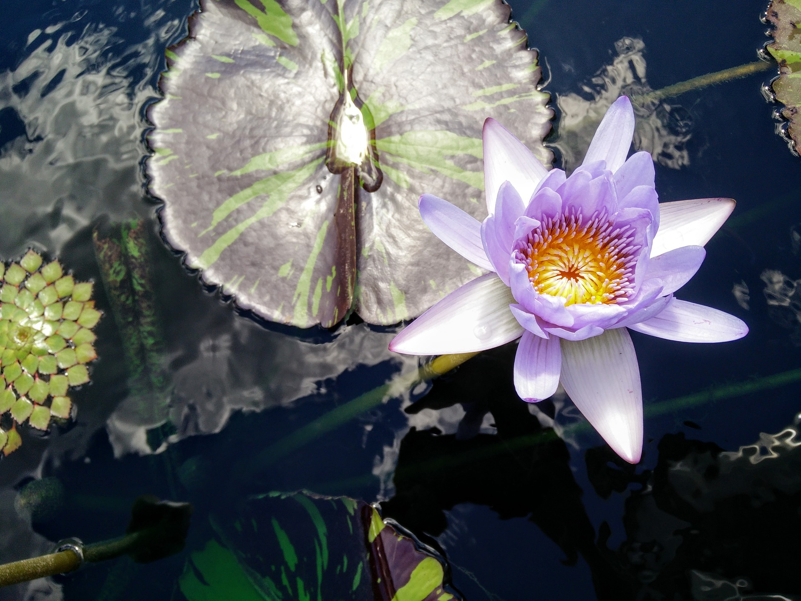

BzraniProject story
picture of Dr. Bzrani at her get away
We are an environmentally conscious company providing healing products and services for beauty, anti-aging, and overall well-being. The history of the Bzrani-Jordan family story begins in the Middle East. Their village was known as a place for healing through spiritual awakening, foods, natural remedies, and counseling. During WW1, Mr. and Mrs. Tabaq along with their children, left that village as did the Bzrani family. They traveled from country to country attempting to escape the horrors of war. Finally, in 1914 they arrived at Ellis Island, New York City, USA. There was a wedding Amelia Tabaq married Ferris Bzrani. The meaning of the name Tabaq is ‘healing herb’ and the name Bzrani means ‘reliance and uniqueness’. And so today, the Healing Heritage continues incorporating ancient wisdom with science and technology. Dr. Bzrani-Jordan (aka Dr. B.) has developed Biologic Restorative products and methods to increase the healing rate while minimizing any healing discomfort. People from all over the world seek her wisdom and remedies. She has created an environment where elimination of all illnesses is possible. 1993 Dr. Bzrani-Jordan added formal education as requested by the then President of the Rep of Guinea West Africa to her family healing heritage knowledge. She earned her Ph.D. in Naturology – which is the study and process of spiritual awakening through elevating consciousness. To begin sharing this healing knowledge with the world, she created a successful halfway house. 2006 Dr. B. left NYC to commune with nature and to expand her studies. This led to further study which resulted in the ability to alleviate illness. 2008 This was the year she purchased a small retreat center in the woods of North Carolina consisting of 6.5 acres where she grows vegetables, fruits and herbs. So, with her family heritage, formal education, and her healing practice she formulated sustainable healing through the development of Biologic Restorative healing foods, fragrances, and methods for elevating consciousness. 2018 This year was a fruitful one. People who were gifted samples of Bzrani Biologic Fragrances soon began requesting the ability to purchase the fragrances and so a new business model was developed. That occurred when a former business-associate contacted Dr. B. requesting that she be allowed to expand Dr. B.’s business. And so, it is that Bzrani has partnered with a group of visionary talented folk, the Bzrani Team, in developing access to Dr. B.’s Biologic Restorative Healing methods and products. 2019 The Bzrani Team launches its healing village project.